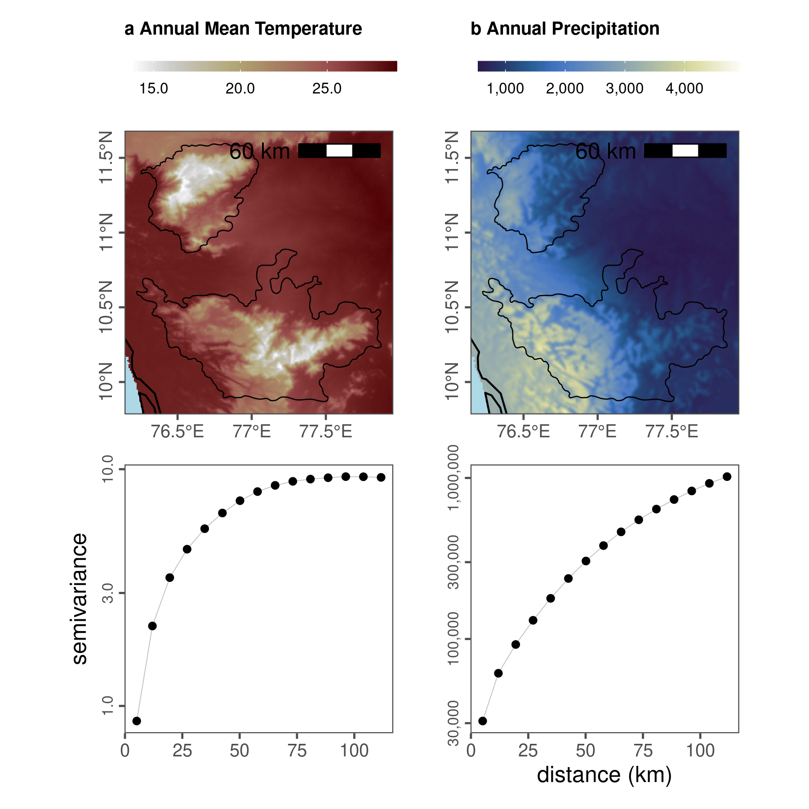

Section 6 Spatial Autocorrelation of Climatic Predictors
6.1 Load libraries
# load libs
library(raster)
library(gstat)
library(stars)
library(purrr)
library(tibble)
library(dplyr)
library(tidyr)
library(glue)
library(scales)
library(gdalUtils)
library(sf)
# plot libs
library(ggplot2)
library(ggthemes)
library(scico)
library(gridExtra)
library(cowplot)
library(ggspatial)
#' make custom functiont to convert matrix to df
raster_to_df <- function(inp) {
# assert is a raster obj
assertthat::assert_that("RasterLayer" %in% class(inp),
msg = "input is not a raster"
)
coords <- coordinates(inp)
vals <- getValues(inp)
data <- tibble(x = coords[, 1], y = coords[, 2], value = vals)
return(data)
}6.2 Prepare data
# list landscape covariate stacks
landscape_files <- "data/spatial/landscape_resamp01_km.tif"
landscape_data <- stack(landscape_files)
# get proper names
elev_names <- c("elev", "slope", "aspect")
chelsa_names <- c("bio_01", "bio_12")
names(landscape_data) <- c(elev_names, chelsa_names, "landcover")
# get chelsa rasters
chelsa <- landscape_data[[chelsa_names]]
chelsa <- purrr::map(as.list(chelsa), raster_to_df)6.3 Calculate variograms of environmental layers
# prep variograms
vgrams <- purrr::map(chelsa, function(z) {
z <- drop_na(z)
vgram <- gstat::variogram(value ~ 1, loc = ~ x + y, data = z)
return(vgram)
})
# save temp
save(vgrams, file = "data/chelsa/chelsaVariograms.rdata")
# get variogram data
vgrams <- purrr::map(vgrams, function(df) {
df %>% select(dist, gamma)
})
vgrams <- tibble(
variable = chelsa_names,
data = vgrams
)wg <- st_read("data/spatial/hillsShapefile/Nil_Ana_Pal.shp") %>%
st_transform(32643)
bbox <- st_bbox(wg)
# add lamd
library(rnaturalearth)
land <- ne_countries(
scale = 50, type = "countries", continent = "asia",
country = "india",
returnclass = c("sf")
)
# crop land
land <- st_transform(land, 32643)6.4 Visualise variograms of environmental data
# make ggplot of variograms
yaxis <- c("semivariance", "")
xaxis <- c("", "distance (km)")
fig_vgrams <- purrr::pmap(list(vgrams$data, yaxis, xaxis), function(df, ya, xa) {
ggplot(df) +
geom_line(aes(x = dist / 1000, y = gamma), size = 0.2, col = "grey") +
geom_point(aes(x = dist / 1000, y = gamma), col = "black") +
scale_x_continuous(labels = comma, breaks = c(seq(0, 100, 25))) +
scale_y_log10(labels = comma) +
labs(x = xa, y = ya) +
theme_few() +
theme(
axis.text.y = element_text(angle = 90, hjust = 0.5, size = 8),
strip.text = element_blank()
)
})
# fig_vgrams <- purrr::map(fig_vgrams, ggplot2::ggplotGrob)
# make ggplot of chelsa data
chelsa <- as.list(landscape_data[[chelsa_names]]) %>%
purrr::map(stars::st_as_stars)
# colour palettes
pal <- c("bilbao", "davos")
title <- c(
"a Annual Mean Temperature",
"b Annual Precipitation"
)
direction <- c(1, 1)
lims <- list(
range(values(landscape_data$bio_01), na.rm = T),
range(values(landscape_data$bio_12), na.rm = T)
)
fig_list_chelsa <-
purrr::pmap(
list(chelsa, pal, title, direction, lims),
function(df, pal, t, d, l) {
ggplot() +
stars::geom_stars(data = df) +
geom_sf(data = land, fill = NA, colour = "black") +
geom_sf(data = wg, fill = NA, colour = "black", size = 0.3) +
scale_fill_scico(
palette = pal, direction = d,
label = comma, na.value = NA, limits = l
) +
coord_sf(
xlim = bbox[c("xmin", "xmax")],
ylim = bbox[c("ymin", "ymax")]
) +
ggspatial::annotation_scale(location = "tr", width_hint = 0.4, text_cex = 1) +
theme_few() +
theme(
legend.position = "top",
title = element_text(face = "bold", size = 8),
legend.key.height = unit(0.2, "cm"),
legend.key.width = unit(1, "cm"),
legend.text = element_text(size = 8),
axis.title = element_blank(),
axis.text.y = element_text(angle = 90, hjust = 0.5),
panel.background = element_rect(fill = "lightblue"),
legend.title = element_blank()
) +
labs(x = NULL, y = NULL, title = t)
}
)
# fig_list_chelsa <- purrr::map(fig_list_chelsa, ggplotGrob)# fig_list_chelsa <- append(fig_list_chelsa, fig_vgrams)
# lmatrix <- matrix(c(c(1, 2, 3, 4, 5), c(1, 2, 3, 4, 5), c(6, 7, 8, 9, 10)),
# nrow = 3, byrow = T
# )
# plot_grid <- grid.arrange(grobs = fig_list_chelsa, layout_matrix = lmatrix)
#
# ggsave(
# plot = plot_grid, filename = "figs/fig_chelsa_variograms.png",
# dpi = 300, width = 12, height = 6
# )
# dev.off()
library(patchwork)
fig_variogram <- wrap_plots(append(fig_list_chelsa, fig_vgrams))
ggsave(fig_variogram,
filename = "figs/fig_chelsa_variograms.png",
dpi = 300,
width = 6, height = 6
)

CHELSA rasters with study area outline, and associated semivariograms. Semivariograms are on a log-transformed y-axis.